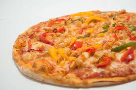

Chicken Bell pepper Pizza

Ingredients
- 2 cup Cooked Chicken shredded
- 1 cup Spicy Barbecue Sauce
- 1 14 Round Unbaked Pizza Dough
- 1/2 md Onion thinly sliced
- 1/2 Green Bell Pepper seeded and thinly sliced
- 1/2 Red Bell Pepper seeded and thinly sliced
- 1/3 cup Oil-Packed Sun-Dried Tomatoes drained and thinly sliced
- 1/4 cup Pine Nuts lightly toasted
- 2 tsp Dried Oregano crumbled
- 1 1/2 cup Mozzarella Cheese shredded
Procedure
-
STEP 1
Preheat oven to 450F. Combine chicken and barbecue sauce in small bowl. Let mixture stand for 15 minutes. (Can be prepared up to 12 hours ahead; cover and refrigerate.) Lightly coat a baking pan with vegetable cooking spray, then sprinkle with a bit of cornmeal, if desired. Place pizza round on the prepared pan. Spread the chicken mixture over the top, then arrange the onion, bell peppers, sun-dried tomatoes and pine nuts over. Sprinkle with oregano. Season lightly with salt and pepper. Finally, spread the cheese evenly over and bake until the crust is golden brown and the topping is golden and bubbly, about 15-20 minutes. -
STEP 2
2 Note: Fresh pizza dough is preferable. If you have a favorite pizza parlor which will sell the raw dough to you, that's great. (1lb of dough will roll and stretch into a 14" round.) You could also start with a baked cheese pizza crust (such as Boboli) available in the bread section of most superets. If using the baked shells, the oven temperature will remain the same, but decrease the baking time by a few minutes